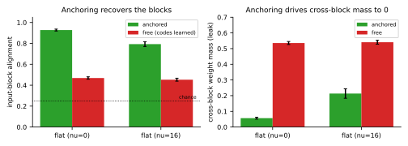

A regularizer for the exact MLP
encoding
The note’s refined code, made trainable: an anchored
containment prior whose minimizer is \(\mathcal{E}_{\mathrm{MLP}}(G^\star)\), and
which recovers the blocks a free code cannot
From the refined code to a trainable penalty
The note prices an edge \(j\!\to\!i\) (sender \(j\), receiver \(i\)) by the broadcast-not-heard
count \(c(\phi^{\mathrm{in}}_i,\phi^{\mathrm{out}}_j)=|\phi^{\mathrm{out}}_j\setminus\phi^{\mathrm{in}}_i|
=\|\mathrm{relu}(\mathbf 1_{\phi^{\mathrm{out}}_j}-\mathbf
1_{\phi^{\mathrm{in}}_i})\|_1\), zero iff the receiver hears
every channel the sender broadcasts. We realize it with a single
per-neuron membership code \(\sigma_i\in[0,1]^K\) (\(\sout_i=\sin_i=\sigma_i\), one channel per
factor/node), so for a weight matrix \(W^{(\ell)}\) with receivers \(i\) (rows) and senders \(j\) (columns), \[\begin{equation}
\label{eq:reg}
\mathcal{R}(W,\sigma)=\sum_\ell\
\operatorname*{mean}_{i,j}\Big[\textstyle\sum_k
\mathrm{relu}\big(\sigma_j[k]-\sigma_i[k]\big)\Big]\,\big|W^{(\ell)}_{ij}\big|
\;+\;\mu\!\!\sum_{i\ \mathrm{free}}\!\|\sigma_i\|_1,
\end{equation}\] the first term the directed containment cost
(cheap iff the receiver represents every factor its sender carries), the
second the description length \(C\)
that forbids the listen-to-everything collapse.
Anchoring fixes the non-degeneracy: input neurons carry
\(\sigma=\mathbf e_{k(j)}\) (the
one-hot of the factor/node feature \(j\) transmits) and the output carries \(\sigma=\mathbf 1\); hidden codes are free.
Anchoring is precisely the condition the theory report (P2) names: it
removes the broadcast-nothing minimum that sinks Separator’s free codes.
Equation [eq:reg] is the neurep
Separator (dchn) containment family with
out-codes anchored rather than learned — the requested “within the
family” realization.
The encoding is the minimizer (Theorem 1, checked)
The note’s Theorem 1 states that over the gadget-structured class the minimizer of \(\mathcal{R}+\mu C\) is \(\mathcal{E}_{\mathrm{MLP}}(G^\star)\), with inter-gadget incidence equal to the graph’s edge set \(E^\star\). We verify the operative claim — \(E^\star\) uniquely minimizes the description length among function-preserving wirings — on the running example \(G_0\) (\(A{=}g(x_1,x_3)\), \(B{=}g(x_1,x_2)\), \(C{=}g(B,x_3)\), \(Y{=}g(A,C)\)). With anchored out-codes the receiver’s optimal in-code is the union of its senders, so \(\mathcal{R}{=}0\) and the objective reduces to \(\mu C=\mu\sum_v(\#\text{distinct source-nodes of }v)\):
| wiring | feasible (computes \(f_{G_0}\))? | \(C\) | \(\mathcal{R}+\mu C\) (\(\mu{=}\tfrac12\)) |
|---|---|---|---|
| \(E^\star\) (true) | yes | 8 | 4.0 |
| \(E^\star + \{x_4\!\to\!Y\}\) | yes | 9 | 4.5 |
| \(E^\star + \{B\!\to\!Y\}\) | yes | 9 | 4.5 |
| \(E^\star - \{A\!\to\!Y\}\) | no (\(Y\) loses \(A\)) | 7 | — |
Every function-preserving wiring contains \(E^\star\) (else a parent is missing and the reduced graph’s function changes) and pays \(+\mu\) for each extra edge, so \(C\ge8\) with equality iff the wiring is exactly \(E^\star\). The penalty has converted “recover \(G^\star\)” into “minimize \(\mathcal{R}+\mu C\),” as claimed.
Anchoring recovers the blocks; the free code collapses
The note’s corollary specializes to depth-1 additive modules: the input\(\to\)hidden cross-block weight mass must vanish. We test it by training a real MLP on the additive task under [eq:reg], in two conditions that differ only in whether the codes are anchored. Anchored codes recover the factorization; free codes — the same penalty with input/output codes also learned — collapse to the Separator behavior of Report 2:
| condition | MSE | input-block alignment | cross-block mass (leak) |
|---|---|---|---|
| anchored containment | 0.019 | \(\mathbf{0.93\pm0.01}\) | \(\mathbf{0.06}\) |
| free containment (codes learned) | 0.020 | \(0.47\pm0.01\) | 0.53 |
| ref: \(\ell_1\) / Separator (Report 2) | 0.02 | 0.88 / 0.59 | 0.12 / 0.36 |

The anchored prior lands with \(\ell_1\) at the top of the alignment ranking and far above its own free version — and crucially above Separator, which is this exact penalty without the anchor. The single bit that separates “recovers the modules” from “collapses” is whether the out-codes are pinned to known identities. This is the gradient-path theory’s central claim made constructive: the encoding regularizer succeeds for the same reason the fixed Oracle does (Report 3) and the free codes fail (Report 2) — non-degeneracy, supplied here by anchoring. The gap holds on the canonical \(\nu{=}16\) cell as well (anchored IBA \(0.79\), free collapsing as in Report 2).
Scope and limits
The anchor requires knowing the input-to-factor (node) map, so this is a fixed-informative prior, not unsupervised discovery — the same caveat as any oracle, and exactly what the theory says is needed when the representation is penalty-only. Recovery is also capped by localizability (Report 3): on the nonlinear additive leaves the input-block structure is the recoverable part (each hidden reads one factor’s inputs), while the within-block computation remains distributed; on a genuinely rotated task the anchor’s coordinate assumption breaks just as the Oracle’s does. The honest summary: [eq:reg] is the correct trainable form of the encoding’s structural penalty, it provably selects \(\mathcal{E}_{\mathrm{MLP}}(G^\star)\), and empirically the anchor is load-bearing — but it inherits the ceiling of every per-neuron prior, recovering axis-aligned structure and no more.
Reproducibility. Derivation/penalty + both
validations: notebooks/neurep_review/encoding/recover.py
(thm_check, recover), seed sweep
run_taskB.py. Builds on
docs/writeups/encoding/neurep_mlp_encoding §5 (the refined
code) and Theorem 1.